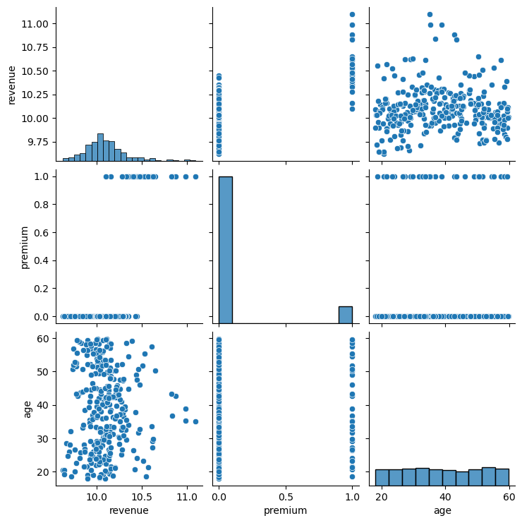
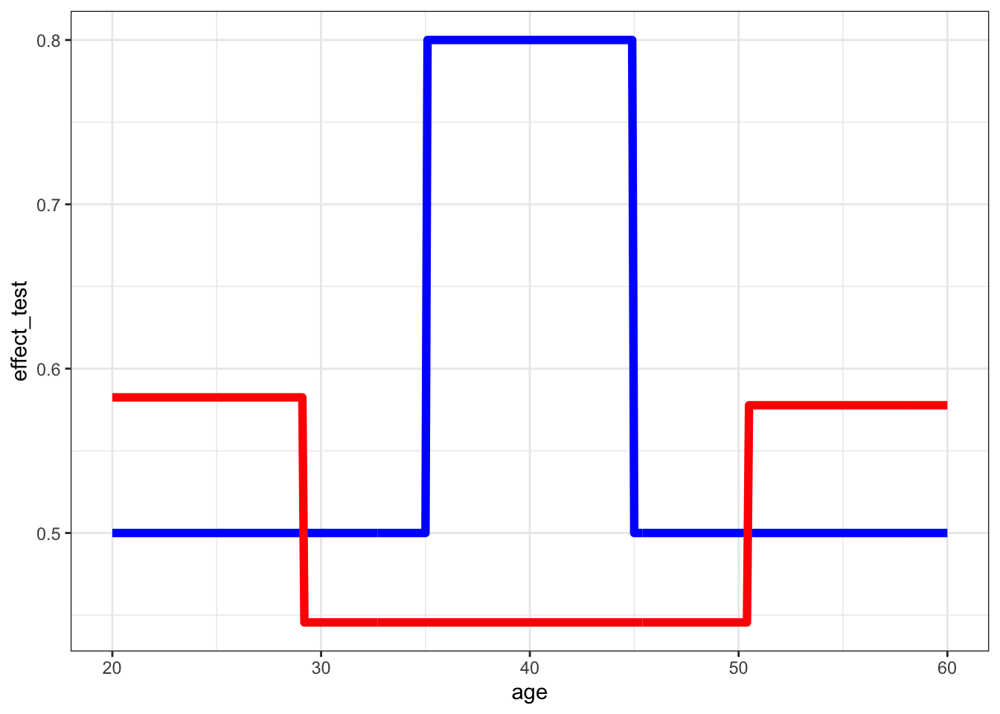

Warning: package 'reticulate' was built under R version 4.4.1GEOG 6960 Causality in Geog. Studies 11 (1)
Introduction
In this lab, we’re going to look at new method for causal analysis using machine learning algorithms. We’ll use a set of synthetic data sets:
Software for causal ML
Both R and Python have packages for causal machine learning.
- R: DoubleML
- Python: both Uber (CausalML) and Microsoft (EconML) have published libraries for causal ML. We’ll use EconML here.
First load (or install and load) the relevant packages. We’ll need some additional packages to explore the data before model building.
library(tidyverse)
library(GGally)
library(ranger)
library(rpart)
library(DoubleML)import numpy as np
import pandas as pd
import seaborn as sns
import statsmodels.api as sm
import statsmodels.formula.api as smf
import matplotlib.pyplot as pltMeta-learners
Meta-learners refer to a family of different approaches for causal ML. The common theme with these is that they are not tied to a single ML algorithm, but can use pretty much any standard algorithm. We’ll look at S- and T-learners here. Meta-learners also include X- and R-learners, with increased complexity (notably in trying to reduce biases).
Example data
Let’s load the first example dataset (week11_ex1.csv). This contains only three variables:
age: a randomly distributed exogenous variable representing age: \(age ~ U(18, 60)\)premuma random variable representing the treatment (whether an individual was sent the premium offer; roughly 10% of the observations) (\([0,1]\))revenuethe outcome variable representing revenue obtained from the customer:- Baseline revenue is given as: \(y_0 = 10\)
- Revenue is increased for ‘premium’ customers as \(y_1 = y_0 + 0.5\)
- A non-linear age effect is added to the baseline for customers between 30 and 50 years old (\(0.1\))
- A second non-linear age effect is added for ‘treated’ customers between 35 and 45 years old (\(0.3\))
The true process is shown by the lines in the figure below. Note that the effect is constant for most of the age range (i.e. the distance between the lines is the same), but increases between 35 and 45 years by 0.3:

The effect can be shown as the difference between these two lines (note the non-linearity). It’s this that we’ll be trying to model in this section.

We can estimate this using the equation given above (this will be useful for plotting results):
X_test = seq(20, 60, 0.1)
effect_test = rep(0.5, length(X_test))
effect_test = ifelse(X_test > 35 & X_test < 45, effect_test + 0.3, effect_test)
df_test = data.frame(age = X_test, effect_test)
ggplot(df_test, aes(x = age, y = effect_test)) +
geom_line() +
theme_bw()X_test = np.arange(20,60, 0.1)
effect_test = [0.5]*len(X_test)
effect_test = effect_test + 0.3*(35<X_test)*(X_test<45)
plt.plot(X_test, effect_test)df = read.csv("./data/week11_ex1.csv")
head(df) revenue premium age
1 10.62 True 27.32
2 10.35 True 54.57
3 10.13 False 26.68
4 9.97 False 56.58
5 10.16 False 38.51
6 9.82 False 43.69df = pd.read_csv("./data/week11_ex1.csv")
df.head() revenue premium age
0 10.62 True 27.32
1 10.35 True 54.57
2 10.13 False 26.68
3 9.97 False 56.58
4 10.16 False 38.51ggpairs(df)`stat_bin()` using `bins = 30`. Pick better value with `binwidth`.
`stat_bin()` using `bins = 30`. Pick better value with `binwidth`.sns.pairplot(df)
As a baseline, let’s fit a linear model to these data. To account for the non-constant effect of age, we can treat this as a moderator, with an interaction with the treatment (premium):
linear_model = lm(revenue ~ premium * age, df)
summary(linear_model)
Call:
lm(formula = revenue ~ premium * age, data = df)
Residuals:
Min 1Q Median 3Q Max
-0.42433 -0.10114 0.00157 0.10328 0.53784
Coefficients:
Estimate Std. Error t value Pr(>|t|)
(Intercept) 10.0244433 0.0342463 292.716 < 2e-16 ***
premiumTrue 0.5947942 0.0990145 6.007 5.53e-09 ***
age 0.0004779 0.0008385 0.570 0.569
premiumTrue:age -0.0021031 0.0024377 -0.863 0.389
---
Signif. codes: 0 '***' 0.001 '**' 0.01 '*' 0.05 '.' 0.1 ' ' 1
Residual standard error: 0.1663 on 296 degrees of freedom
Multiple R-squared: 0.4735, Adjusted R-squared: 0.4681
F-statistic: 88.72 on 3 and 296 DF, p-value: < 2.2e-16linear_model = smf.ols('revenue ~ premium * age',
data=df).fit()
linear_model.summary().tables[1]| coef | std err | t | P>|t| | [0.025 | 0.975] | |
| Intercept | 10.0244 | 0.034 | 292.716 | 0.000 | 9.957 | 10.092 |
| premium[T.True] | 0.5948 | 0.099 | 6.007 | 0.000 | 0.400 | 0.790 |
| age | 0.0005 | 0.001 | 0.570 | 0.569 | -0.001 | 0.002 |
| premium[T.True]:age | -0.0021 | 0.002 | -0.863 | 0.389 | -0.007 | 0.003 |
The results show a significant treatment effect, but no significance with either age or the interaction term. This is fairly understandable: there is no linear trend with age (just the offset for 35 to 45), nor is there any difference in the trends that are fit.
We can visualize these to show these results: note that there’s a fairly large distance between the lines (the premium effect), but no real difference in slope:
library(ggeffects)
plot(ggpredict(linear_model,
terms = c("age", "premium")),
show_data = TRUE)df['mu1_hat'] = linear_model.predict(df.assign(premium=1))
df['mu0_hat'] = linear_model.predict(df.assign(premium=0))
sns.scatterplot(data=df, x='age', y='revenue', hue='premium', s=40, legend=True)
sns.lineplot(data=df, x='age', y='mu0_hat', label='$\mu_0$')
sns.lineplot(data=df, x='age', y='mu1_hat', label='$\mu_1$')S-learner
We’ll start by fitting a S-learner model. This is the simplest of the causal ML methods, and uses a single ML model, but with the treatment variable included as one of the predictive features.
In R, we can fit this by simply using a decision tree from rpart:
s_learner = rpart(revenue ~ age + premium,
df, control = rpart.control(cp = 0.03))We can use this to then predict the estimated values for each observation for both scenarios (premium = True, premium = False):
df0 <- df %>%
arrange(age)
df0$premium <- 'False'
df0$yhat <- predict(s_learner, df0)
df1 <- df %>%
arrange(age)
df1$premium <- 'True'
df1$yhat <- predict(s_learner, df1)And this can then be used to estimate the CATE and ATE:
cate_est = df1$yhat - df0$yhat
print(paste("ATE:", round(mean(cate_est), 2)))[1] "ATE: 0.51"In Python, we need to first one-hot encode the premium variable, then extract the relevant data.
df2 = pd.get_dummies(df, columns=['premium'], drop_first=True, dtype=int)
df2.columnsIndex(['revenue', 'age', 'mu1_hat', 'mu0_hat', 'premium_True'], dtype='object')
X = df2['age'].to_numpy()
T = df2['premium_True'].to_numpy()
y = df2['revenue'].to_numpy()For a first attempt, we’ll use the Slearner function from EconML together with scikit-learn’s decision tree model in the learner. First import this and instantiate it:
from econml.metalearners import SLearner
from sklearn.tree import DecisionTreeRegressor
s_learner = SLearner(overall_model=DecisionTreeRegressor(min_impurity_decrease=0.001))Now fit it to the data:
s_learner.fit(y, T, X=X.reshape(-1, 1))<econml.metalearners._metalearners.SLearner object at 0x30cd9b8d0>And we can obtain the average treatment effect:
s_learner.ate()0.582527618205928Now we can visualize the results as the effect (the predicted difference between treated and control:
df_test$premium <- 'False'
df_test$yhat0 <- predict(s_learner, df_test)
df_test$premium <- 'True'
df_test$yhat1 <- predict(s_learner, df_test)
df_test$effect_pred <- df_test$yhat1 - df_test$yhat0
ggplot(df_test, aes(x = age)) +
geom_line(aes(y = effect_test), size = 2, col = 'blue') +
geom_line(aes(y = effect_pred), size = 2, col = 'red') +
theme_bw()
y_test_s_effect = s_learner.effect(X_test.reshape(-1,1))
plt.plot(X_test, effect_test, label="Truth")
plt.plot(X_test, y_test_s_effect, label="S-Learner (DT)")
plt.legend()
plt.show()Here you can see that the decision tree has picked up on the age effect in the non-treated customers, but not in the treated one. This is due to the imbalanced dataset: there are large difference in the number of customers between the two groups.
We’ll try to improve on this below by using a different learner. But first, let’s see what the effect is of using a different algorithm, by using a random forest:
my_features = c("age", "premium")
s_learner = ranger(y = df$revenue,
x = df[, my_features],
keep.inbag = TRUE)df0 <- df %>%
arrange(age)
df0$premium <- 'False'
df0$yhat <- predict(s_learner, df0)$prediction
df1 <- df %>%
arrange(age)
df1$premium <- 'True'
df1$yhat <- predict(s_learner, df1)$prediction
ate_est = mean(df1$yhat - df0$yhat)
print(paste("ATE:", round(ate_est, 2)))[1] "ATE: 0.51"df_test$premium <- 'False'
df_test$yhat0 <- predict(s_learner, df_test)$prediction
df_test$premium <- 'True'
df_test$yhat1 <- predict(s_learner, df_test)$prediction
df_test$effect_pred <- df_test$yhat1 - df_test$yhat0
ggplot(df_test, aes(x = age)) +
geom_line(aes(y = effect_test), size = 2, col = 'blue') +
geom_line(aes(y = effect_pred), size = 2, col = 'red') +
theme_bw()from sklearn.ensemble import RandomForestRegressor
s_learner = SLearner(overall_model=RandomForestRegressor(max_depth=4))
s_learner.fit(y, T, X=X.reshape(-1, 1))<econml.metalearners._metalearners.SLearner object at 0x30cdd8110>y_test_s_effect = s_learner.effect(X_test.reshape(-1,1))
plt.plot(X_test, effect_test, label="Truth")
plt.plot(X_test, y_test_s_effect, label="S-Learner (RF)")
plt.legend()
plt.show()This does a better overall job at capturing the effect. There’s some noise, particularly in the younger and older ages. Tuning the random forest, or using a different algorithm may help to reduce this.
T-learner
The T-learner uses two different models: one for the controls, one for the treatment. This can avoid some of the issues with the S-learner, particularly when one of the groups is sparse.Unlike the S-learner, the treatment variable is not used to fit the model, but to split the data. This allows a greater amount of flexibility as different algorithms can be used for the two groups. Here we’ll start with a simple decision tree for each model.
df0t <- df %>%
filter(premium == 'False') %>%
select("age", "revenue")
df1t <- df %>%
filter(premium == 'True') %>%
select("age", "revenue")t_learner0 = rpart(revenue ~ age,
df0t, control = rpart.control(cp = 0.03))
t_learner1 = rpart(revenue ~ age,
df1t, control = rpart.control(cp = 0.03))
## Get CATE
df0 <- df %>%
arrange(age)
df0$premium <- 'False'
df0$yhat <- predict(t_learner0, df0)
df1 <- df %>%
arrange(age)
df1$premium <- 'True'
df1$yhat <- predict(t_learner1, df1)
ate_est = mean(df1$yhat - df0$yhat)
print(paste("ATE:", round(ate_est, 2)))[1] "ATE: 0.54"## Plot effect
df_test$premium <- 'False'
df_test$yhat0 <- predict(t_learner0, df_test)
df_test$premium <- 'True'
df_test$yhat1 <- predict(t_learner1, df_test)
df_test$effect_pred <- df_test$yhat1 - df_test$yhat0
ggplot(df_test, aes(x = age)) +
geom_line(aes(y = effect_test), size = 2, col = 'blue') +
geom_line(aes(y = effect_pred), size = 2, col = 'red') +
theme_bw()
from econml.metalearners import TLearner
t_learner = TLearner(models=[DecisionTreeRegressor(min_impurity_decrease=0.001),
DecisionTreeRegressor(min_impurity_decrease=0.001)])
t_learner.fit(y, T, X=X.reshape(-1, 1))<econml.metalearners._metalearners.TLearner object at 0x30efb11d0>y_test_t_effect = t_learner.effect(X_test.reshape(-1,1))
plt.plot(X_test, effect_test, label="Truth")
plt.plot(X_test, y_test_t_effect, label="T-Learner (DT/DT)")
plt.legend()
plt.show()This is much better fit than the equivalent S-learner. By splitting the data, the model is not imbalanced towards the control group. It’s a little noisy compared to the true effect, but this could be fixed by reducing the complexity of the decision trees or by replacing one of the trees with a simpler algorithm.
To illustrate this last point, we’ll refit the learner with a linear model for the first model (the control group) and a random forest for the second (the treatment group):
t_learner0 = lm(revenue ~ age, df0)
t_learner1 = ranger(revenue ~ age, df1t,
keep.inbag = TRUE,
importance = "permutation")
df0 <- df %>%
arrange(age)
df0$premium <- 'False'
df0$yhat <- predict(t_learner0, df0)
df1 <- df %>%
arrange(age)
df1$premium <- 'True'
df1$yhat <- predict(t_learner1, df1)$prediction
ate_est = mean(df1$yhat - df0$yhat)
print(paste("ATE:", round(ate_est, 2)))[1] "ATE: 0.49"df_test$premium <- 'False'
df_test$yhat0 <- predict(t_learner0, df_test)
df_test$premium <- 'True'
df_test$yhat1 <- predict(t_learner1, df_test)$prediction
df_test$effect_pred <- df_test$yhat1 - df_test$yhat0
ggplot(df_test, aes(x = age)) +
geom_line(aes(y = effect_test), size = 2, col = 'blue') +
geom_line(aes(y = effect_pred), size = 2, col = 'red') +
theme_bw()from sklearn.linear_model import LinearRegression
t_learner = TLearner(models=[LinearRegression(),
RandomForestRegressor(max_depth=4)])
t_learner.fit(y, T, X=X.reshape(-1, 1))<econml.metalearners._metalearners.TLearner object at 0x30ef88790>y_test_t_effect = t_learner.effect(X_test.reshape(-1,1))
plt.plot(X_test, effect_test, label="Truth")
plt.plot(X_test, y_test_t_effect, label="T-Learner (LR/RF)")
plt.legend()
plt.show()Metalearner interpretation
Note that you can access the individual models within the learner. This means that you can use the usual set of model interpretation methods (feature importance, partial dependencies, Shapley values). As this model only has a single feature, the importance is not very interesting, but for reference, you can access the values as follows:
To get the feature importance from the outcome model (the random forest) in the T-learner:
t_learner1$variable.importance age
0.05596258 And you can plot the partial dependency on age (the only feature) with:
library(pdp)
partial(t_learner1, "age", plot = TRUE)To get the feature importance from the outcome model (the random forest) in the T-learner:
t_learner.models[1].feature_importances_[1.]And you can plot the partial dependency on age (the only feature) with:
from sklearn.inspection import PartialDependenceDisplay
PartialDependenceDisplay.from_estimator(t_learner.models[1], X.reshape(-1,1), [0])<sklearn.inspection._plot.partial_dependence.PartialDependenceDisplay object a >
> t 0x30efe2210>
Causal Forests
We’ll next look at causal forests. These are modifications of random forests designed to best estimate the CATE (the individual or heterogenous treatment effect). As a result, they have a few differences with a traditional RF model:
- All tree splits are chosen to maximize the difference in the treatment effect, not the error against the observed value. In other words, each split divides between a control and treated group, and the value of the split corresponds to the largest difference in the outcome between these groups
- The forests are honest: the splitting and the calculation of the difference in effect are carried out using two subsets of data
- The forests usually include cross-fitting: the subsets for splitting and testing are reversed, and the models are averaged
These models have a number of theoretical advantages: they are unbiased estimators and they can be used to generate confidence intervals around the estimated effects
We’ll fit one here using the same dataset as in the meta-learner section.
In R, the grf library provides a function to fit causal forests:
library(grf)
X = as.matrix(df[, "age"])
Y = as.matrix(df[, "revenue"])
W = ifelse(df[, "premium"] == "True", 1, 0)
cf = causal_forest(X, Y, W)The CATE values can be extracted with predict(). To get the ATE:
X_test_df = data.frame(age = X_test)
df_test$effect_cf = predict(cf, data.frame(age = df_test[,"age"]))$prediction
ate_est = mean(df_test$effect_cf)
print(paste("ATE:", round(ate_est, 2)))[1] "ATE: 0.53"In Python, we can use the CausalForest function from EconML. This has a very similar interface to the metalearners above:
from econml.grf import CausalForest
cf = CausalForest()
cf.fit(X=X.reshape(-1, 1), T=T, y=y)CausalForest()In a Jupyter environment, please rerun this cell to show the HTML representation or trust the notebook.
On GitHub, the HTML representation is unable to render, please try loading this page with nbviewer.org.
CausalForest()
The CATE values can be extracted with predict(). To get the ATE:
cf.predict(X.reshape(-1, 1)).mean()0.5180767710140363And the effect can be visualized as before. The change in effect is weaker than the meta-learners. These forests generally work better with a larger number of features (we only have one here). The smoothing is largely a result of the averaging through cross-fitting.
ggplot(df_test, aes(x = age)) +
geom_line(aes(y = effect_test), size = 2, col = 'blue') +
geom_line(aes(y = effect_cf), size = 2, col = 'red') +
theme_bw()y_test_cf_effect = cf.predict(X_test.reshape(-1, 1))
plt.plot(X_test, effect_test, label="Truth")
plt.plot(X_test, y_test_cf_effect, label="Causal Forest")
plt.legend()
plt.show()Appendix: Data files
Example 1 week11_ex1.csv
| Column header | Variable |
|---|---|
| revenue | Client revenue ($000s) |
| premium | Was client offered premium service [0,1] |
| age | Client age |